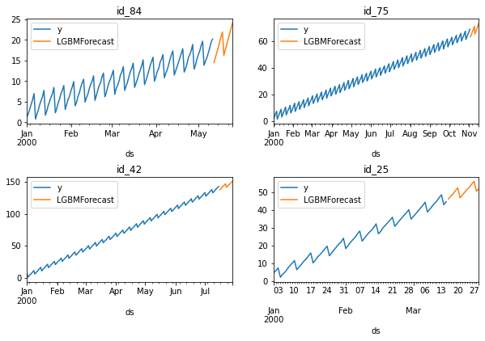

from dask.distributed import Client, LocalCluster
cluster = LocalCluster(n_workers=2, threads_per_worker=1) # change this to use a remote cluster
client = Client(cluster)Quick start (distributed)
Minimal example of distributed training with MLForecast
Main concepts
The main component for distributed training with mlforecast is the DistributedMLForecast class, which abstracts away:
- Feature engineering and model training through
DistributedMLForecast.fit - Feature updates and multi step ahead predictions through
DistributedMLForecast.predict
Setup
In order to perform distributed training you need a dask cluster. In this example we’ll use a local cluster but you can replace it with any other type of remote cluster and the processing will take place there.
Data format
The data is expected to be a dask dataframe in long format, that is, each row represents an observation of a single serie at a given time, with at least three columns:
id_col: column that identifies each serie.target_col: column that has the series values at each timestamp.time_col: column that contains the time the series value was observed. These are usually timestamps, but can also be consecutive integers.
You need to make sure that each serie is only in a single partition. You can do so by setting the id_col as the index in dask or with repartitionByRange in spark.
Here we present an example with synthetic data.
import dask.dataframe as dd
from mlforecast.utils import generate_daily_seriesseries = generate_daily_series(100, with_trend=True)
series| unique_id | ds | y | |
|---|---|---|---|
| 0 | id_00 | 2000-01-01 | 0.497650 |
| 1 | id_00 | 2000-01-02 | 1.554489 |
| 2 | id_00 | 2000-01-03 | 2.734311 |
| 3 | id_00 | 2000-01-04 | 4.028039 |
| 4 | id_00 | 2000-01-05 | 5.366009 |
| ... | ... | ... | ... |
| 26998 | id_99 | 2000-06-25 | 34.165302 |
| 26999 | id_99 | 2000-06-26 | 28.277320 |
| 27000 | id_99 | 2000-06-27 | 29.450129 |
| 27001 | id_99 | 2000-06-28 | 30.241885 |
| 27002 | id_99 | 2000-06-29 | 31.576907 |
27003 rows × 3 columns
Here we can see that the index goes from id_00 to id_99, which means we have 100 different series stacked together.
We also have the ds column that contains the timestamps, in this case with a daily frequency, and the y column that contains the series values in each timestamp.
In order to perform distributed processing and training we need to have these in a dask dataframe, this is typically done loading them directly in a distributed way, for example with dd.read_parquet.
series_ddf = dd.from_pandas(series.set_index('unique_id'), npartitions=2) # make sure we split by id
series_ddf = series_ddf.map_partitions(lambda part: part.reset_index()) # we can't have an index
series_ddf['unique_id'] = series_ddf['unique_id'].astype('str') # categoricals aren't supported at the moment
series_ddfDask DataFrame Structure:
| unique_id | ds | y | |
|---|---|---|---|
| npartitions=2 | |||
| id_00 | object | datetime64[ns] | float64 |
| id_49 | ... | ... | ... |
| id_99 | ... | ... | ... |
Dask Name: assign, 5 graph layers
We now have a dask dataframe with two partitions which will be processed independently in each machine and their outputs will be combined to perform distributed training.
Modeling
import random
import matplotlib.pyplot as plt
def plot_sample(df, ax):
idxs = df['unique_id'].unique()
random.seed(0)
sample_idxs = random.choices(idxs, k=4)
for uid, axi in zip(sample_idxs, ax.flat):
df[df['unique_id'].eq(uid)].set_index('ds').plot(ax=axi, title=uid)fig, ax = plt.subplots(nrows=2, ncols=2, figsize=(10, 6), gridspec_kw=dict(hspace=0.5))
plot_sample(series, ax)
fig.savefig('../figs/quick_start_distributed__sample.png', bbox_inches='tight')
plt.close()
We can see that the series have a clear trend, so we can take the first difference, i.e. take each value and subtract the value at the previous month. This can be achieved by passing an mlforecast.target_transforms.Differences([1]) instance to target_transforms.
We can then train a LightGBM model using the value from the same day of the week at the previous week (lag 7) as a feature, this is done by passing lags=[7].
from mlforecast.distributed import DistributedMLForecast
from mlforecast.distributed.models.dask.lgb import DaskLGBMForecast
from mlforecast.target_transforms import Differencesfcst = DistributedMLForecast(
models=DaskLGBMForecast(verbosity=-1),
freq='D',
lags=[7],
target_transforms=[Differences([1])],
)
fcst.fit(series_ddf)/home/jose/mambaforge/envs/mlforecast/lib/python3.10/site-packages/lightgbm/dask.py:525: UserWarning: Parameter n_jobs will be ignored.
_log_warning(f"Parameter {param_alias} will be ignored.")Finding random open ports for workers
[LightGBM] [Info] Trying to bind port 52367...
[LightGBM] [Info] Binding port 52367 succeeded
[LightGBM] [Info] Listening...
[LightGBM] [Info] Trying to bind port 48789...
[LightGBM] [Info] Binding port 48789 succeeded
[LightGBM] [Info] Listening...
[LightGBM] [Info] Connected to rank 1
[LightGBM] [Info] Connected to rank 0
[LightGBM] [Info] Local rank: 0, total number of machines: 2
[LightGBM] [Info] Local rank: 1, total number of machines: 2
[LightGBM] [Warning] num_threads is set=1, n_jobs=-1 will be ignored. Current value: num_threads=1
[LightGBM] [Warning] num_threads is set=1, n_jobs=-1 will be ignored. Current value: num_threads=1DistributedMLForecast(models=[DaskLGBMForecast], freq=<Day>, lag_features=['lag7'], date_features=[], num_threads=1, engine=None)The previous line computed the features and trained the model, so now we’re ready to compute our forecasts.
Forecasting
Compute the forecast for the next 14 days.
preds = fcst.predict(14)
predsDask DataFrame Structure:
| unique_id | ds | DaskLGBMForecast | |
|---|---|---|---|
| npartitions=2 | |||
| id_00 | object | datetime64[ns] | float64 |
| id_49 | ... | ... | ... |
| id_99 | ... | ... | ... |
Dask Name: map, 17 graph layers
These are returned as a dask dataframe as well. If it’s safe (memory-wise) we can bring them to the main process.
local_preds = preds.compute()Visualize results
We can visualize what our prediction looks like.
import pandas as pdfig, ax = plt.subplots(nrows=2, ncols=2, figsize=(10, 6), gridspec_kw=dict(hspace=0.5))
plot_sample(pd.concat([series, local_preds.set_index('unique_id')]), ax)
fig.savefig('../figs/quick_start_distributed__sample_prediction.png', bbox_inches='tight')
plt.close()
And that’s it! You’ve trained a distributed LightGBM model and computed predictions for the next 14 days.
Give us a ⭐ on Github